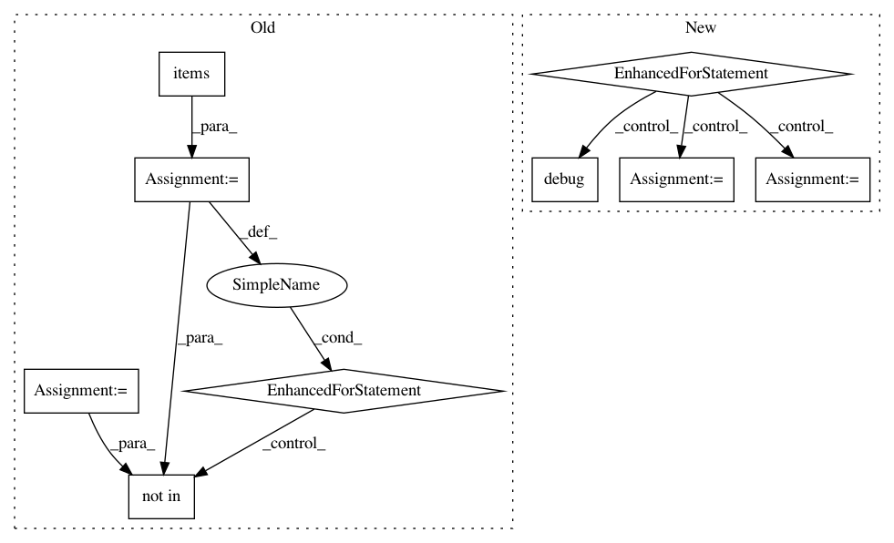

879df20df1df1b9cf16e29cb4a2836f4831f23d9,src/python/pants/backend/python/subsystems/pex_build_util.py,PexBuilderWrapper,add_resolved_requirements,#PexBuilderWrapper#Any#Any#,230
Before Change
Defaults to the platforms specified by PythonSetup.
distributions = self._resolve_distributions_by_platform(reqs, platforms=platforms)
locations = set()
for platform, dists in distributions.items():
for dist in dists:
if dist.location not in locations:
self._log.debug(f" Dumping distribution: .../{os.path.basename(dist.location)}")
self.add_distribution(dist)
locations.add(dist.location)
def _resolve_multi(self, interpreter, requirements, platforms, find_links):
Multi-platform dependency resolution for PEX files.
Returns a list of distributions that must be included in order to satisfy a set of requirements.
After Change
:param platforms: A list of platform strings to resolve requirements for.
Defaults to the platforms specified by PythonSetup.
for resolved_dist in self.resolve_distributions(reqs, platforms=platforms):
requirement = resolved_dist.requirement
self._log.debug(f" Dumping requirement: {requirement}")
self._builder.add_requirement(str(requirement))
distribution = resolved_dist.distribution
self._log.debug(f" Dumping distribution: .../{os.path.basename(distribution.location)}")
self.add_distribution(distribution)
def _resolve_multi(self, requirements, platforms=None, find_links=None):
python_setup = self._python_setup_subsystem
python_repos = self._python_repos_subsystem
platforms = platforms or python_setup.platforms
In pattern: SUPERPATTERN
Frequency: 3
Non-data size: 9
Instances
Project Name: pantsbuild/pants
Commit Name: 879df20df1df1b9cf16e29cb4a2836f4831f23d9
Time: 2019-12-08
Author: john.sirois@gmail.com
File Name: src/python/pants/backend/python/subsystems/pex_build_util.py
Class Name: PexBuilderWrapper
Method Name: add_resolved_requirements
Project Name: deepfakes/faceswap
Commit Name: bcf38b02cc7209d1baccd1302b5224f5faf2f00a
Time: 2021-01-31
Author: 36920800+torzdf@users.noreply.github.com
File Name: plugins/train/model/_base.py
Class Name: _Inference
Method Name: _make_inference_model
Project Name: pantsbuild/pants
Commit Name: c15e9b0930ea6ce6eef5be7c6c00b9ee2b706865
Time: 2020-02-21
Author: john.sirois@gmail.com
File Name: src/python/pants/python/pex_build_util.py
Class Name: PexBuilderWrapper
Method Name: add_resolved_requirements